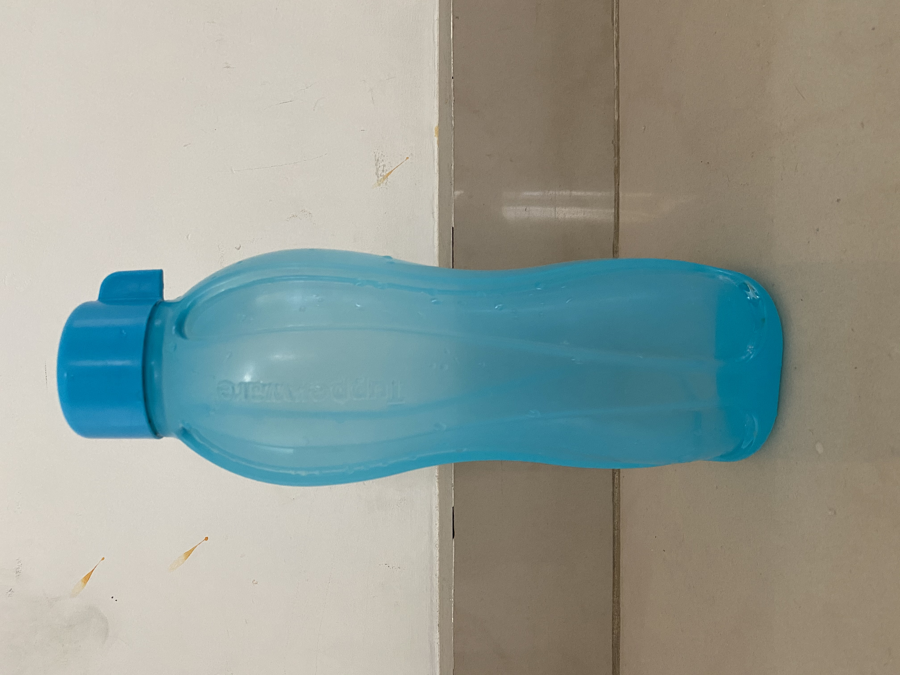
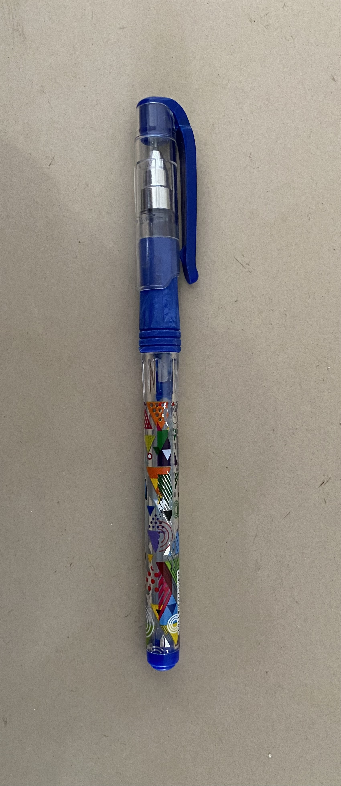
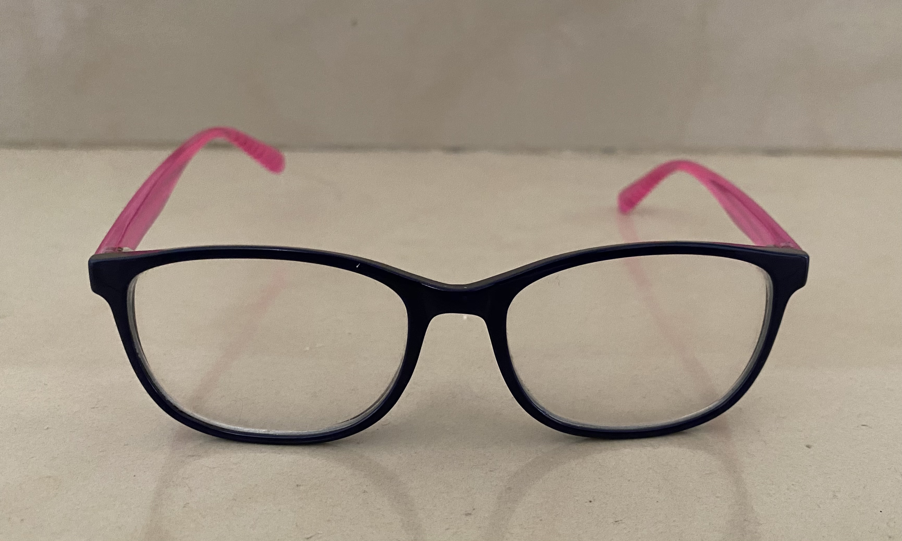
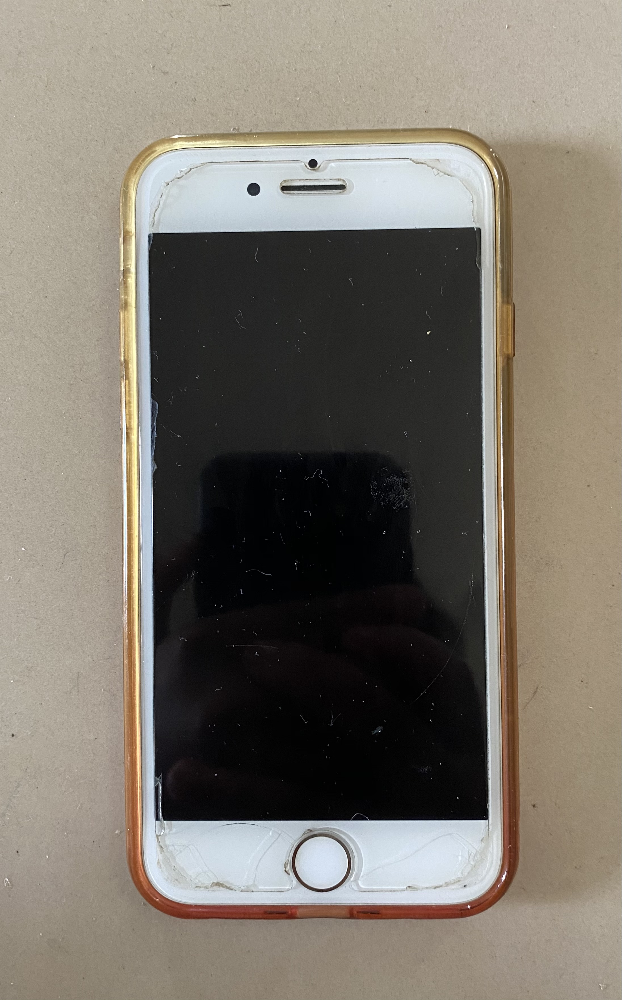
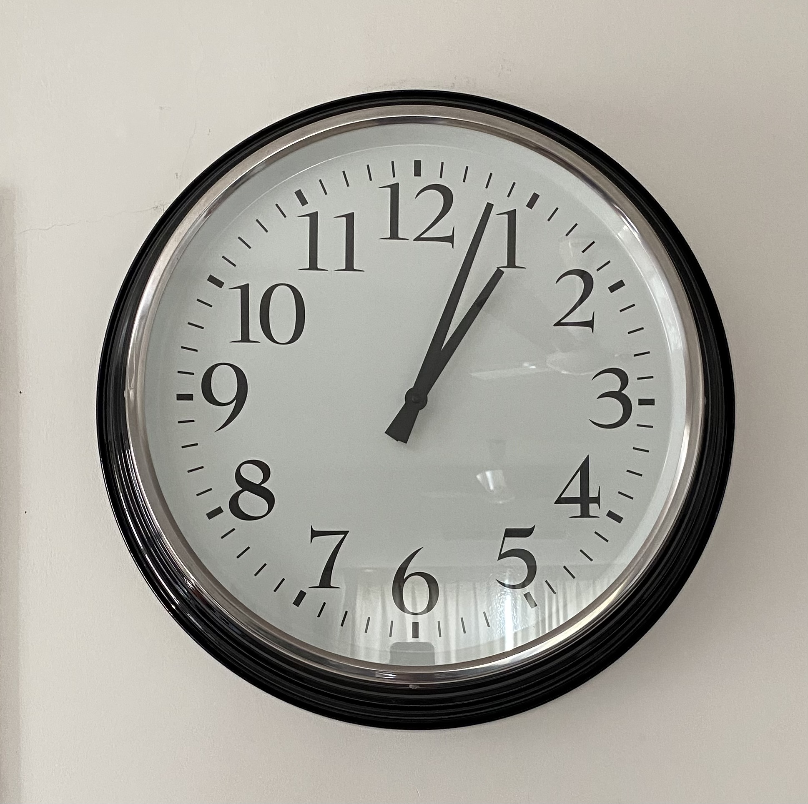
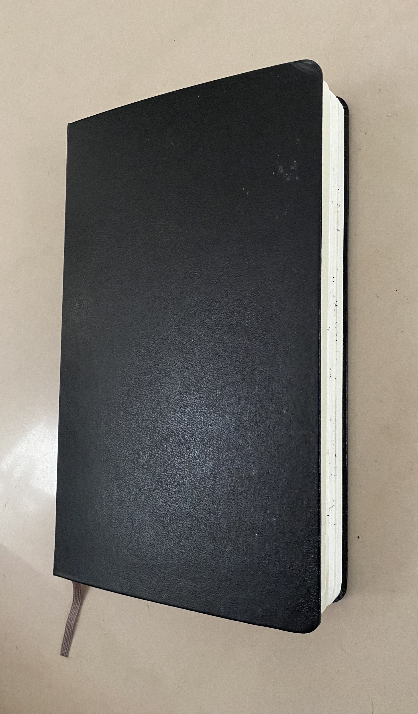

CASE STUDY- Wolfram Model VS. Mobile Net
Object: Water Bottle

Wolfram Model Result: Bottle
Mobile Net Model Result: Water Bottle
Mobile Net is more accurate.
Object: Pen

Wolfram Model Result: Lanyard
Mobile Net Model Result: Syringe
Both are not accurate.
Object: Glasses

Wolfram Model Result: Monocle
Mobile Net Model Result: Sunglasses, Dark Glasses, Shades
Mobile Net is more accurate.
Object: Curtains
Wolfram Model Result: Shower Curtain
Mobile Net Model Result: Theatre Curtain
Wolfram is more accurate.
Object: Iphone

Wolfram Model Result: Laptop
Mobile Net Model Result: Mobile Phone
Mobile Net is more accurate.
Object: Clock

Wolfram Model Result: Clock
Mobile Net Model Result: Wall Clock
Mobile Net is more accurate.
Object: Notebook

Wolfram Model Result: Cardcase
Mobile Net Model Result: PocketBook
Mobile Net is more accurate.